Introduction
Aside from the often amateurish reduction of (pseudo)ephedrine to methamphetamine, the most popular precursor to amphetamine and methamphetamine is
phenyl-2-propanone (also called P2P, BMK, Benzyl Methyl Ketone or Phenylacetone). There is an astounding array of synthetic routes to this compound, both
due to the relative simple structure of the compound, and also because of its popularity. Many of the earliest routes to the compound has been more or less
abandoned due to restrictions on the pre-precursors used to make it, but there has always sprung up new methods of performing the feat of making this
compound. Here is a collection of some of the possible methods of synthesizing phenyl-2-propanone, ranging from simple one-step methods to elaborate
multi-step variants, and from the very easy to the very complicated. Welcome to the world of P2P.
Many of the syntheses can also be tweaked to produce substituted phenyl-2-propanones, such as the ever popular MDMA precursor MDP2P
(3,4-methylenedioxyphenyl-2-propanone) by using starting materials with the desirable aromatic substituents.
- Appearance: Clear oil, flowery odor
- Boiling Point: 214-216°C/760mmHg, 86-87°C/6mmHg
- Melting Point: -15°C
- Molecular Weight: 134.19 g/mol
- Density: 1.0057 g/ml (20°C)
- Refractive Index: 1.5168
Phenyl-2-Propanone from Benzyl Cyanide
alpha-Phenylacetoacetonitrile1
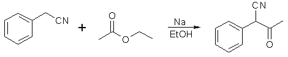
A solution of sodium ethoxide is prepared from 60 g. (2.6 mol) clean sodium and 700 ml of absolute alcohol (dried over calcium oxide or sodium) in a
2000 ml round-bottomed flask equipped with a reflux condenser. To the hot solution added a mixture of 234g (2 moles) of pure benzyl
cyanide 264g (3 moles) of dry ethyl acetate (dried by refluxing over P2O5 for 30min followed by distillation). The mixture is thoroughly shaken, the
condenser closed with a calcium chloride tube, and the solution heated on the steam bath for two hours before standing overnight. The next morning the
mixture is stirred with a wooden rod to break lumps, cooled in a freezing mixture to -10°C, and kept at this temperature for two hours. The sodium salt is
collected on a 6 inch Buchner funnel and washed four times on the funnel with 250 ml portions of ether. The filter cake is practically colorless and
corresponds 250-275g of dry sodium salt, or 69-76% of the calculated mount. The combined filtrates are placed in the freezing mixture until they can be
worked up as indicated below.
The sodium salt still wet with ether is dissolved in 1.3 liters of distilled water at room temperature, the solution cooled to 0°C, and the nitrile
precipitated by adding slowly, with vigorous shaking, 90 ml of glacial acetic acid, while the temperature is kept below 10°C. The precipitate separated by
suction filtration and washed four times on the funnel with 250 ml portions of water. The moist cake weighing about 300g corresponds to 188-206g (59-64%)
of dry colorless alpha-phenylacetoacetonitrile, mp 87-89°C.
Phenyl-2-Propanone2
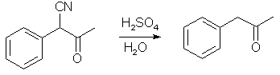
350 ml of concentrated sulfuric acid is placed in a 3000ml flask and cooled to -10°C. The total first crop of moist alpha-phenylacetoacetonitrile
obtained according to the procedure above (corresponding to 188-206g or 1.2-1.3 moles of dry product) is added slowly, with shaking, the temp being
kept below 20°C (If pure dry alpha-phenylacetoacetonitrile is used, half its weight of water should be added to the sulfuric acid or charring will
take place on the steam bath). After all is added the flask is warmed on the steam bath until solution is complete and then for five minutes longer.
The solution is cooled to 0°C, 1750ml of water added rapidly, and the flask placed on a vigorously boiling water bath and heated for two hours, with
occasional shaking. The ketone forms a layer and, after cooling, is separated and the acid layer extracted with 600ml of ether. The oil and
ether layers are washed successively with 100ml of water, the ether combined with the oil and dried over 20g of anhydrous sodium sulfate. The
sodium sulfate is collected on a filter, washed with ether, and discarded. The ether is removed from the filtrates, and the residue distilled from a
modified Claisen flask with a 25 cm fractionating side arm. The fraction boiling at 110-112°C at 24 mmHg is collected; it weighs 125-150g (77-86%
of the theoretical amount).
A somewhat higher yield has been obtained by a different variation of this synthesis, originating from Russia.

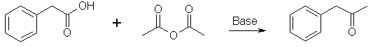
In this reaction, it is important that acetic anhydride is present in the reaction mixture in a large molar excess over the phenylacetic acid. If the
ratio is too small, the phenylacetone will condense with itself to form useless Dibenzyl Ketone.
Sodium Acetate Method (alternative)3b
| PAA |
AA |
AA:PAA |
NaOAc |
Time |
Yield |
60 g |
600 g |
10 |
30 g |
5 h |
0% |
60 g |
600 g |
10 |
30 g |
8 h |
33.0% |
60 g |
600 g |
10 |
30 g |
12 h |
46.3% |
60 g |
600 g |
10 |
30 g |
20 h |
50.8% |
60 g |
1000 g |
16.6 |
30 g |
20 h |
51.6% |
60 g |
600 g |
11.5 |
90 g |
20 h |
51.5% |
100 g |
600 g |
6 |
50 g |
20 h |
49.0% |
100 g |
600 g |
2 |
50 g |
20 h |
33.0% |
|
100 g |
600 g |
6 |
500 g |
20 h |
56.0% |
The Phenylacetic Acid (PAA), Acetic Anhydride (AA) and Sodium Acetate (NaOAc) is put in to a large round-bottomed flask equipped with a reflux condenser fitted with a drying tube. Heating of the reaction mixture to 145-150°C on an oil bath provides sufficiently energetic evolution of carbon dioxide. Formation of the ketone is controlled by mixing an aliquot of the reaction mixture with excess of water and ammonium hydroxide until weakly alkaline – upon heating to boiling the oily layer must not disappear.
The reflux setup is rearranged for distillation and excess solvent is removed (acetic acid and acetic anhydride, purify and reuse). To the residue there is added 400ml water and the mixture is extracted with 3x100mL dichloromethane (or chloroform). The solvent is stripped off under vacuum and by vacuum distilling at 125-135°C/30-32 mmHg the crude product is obtained. A second distillation gives 50-55% yield of product boiling at 210-215°C at atmospherical pressure. Phenyl-2-Propanone Ketoxime was obtained in 88-90% yield, which was distilled at 154-156°C/30mmHg.
Sodium Acetate Method (alternative)3b
50 g phenylacetic acid, 25 g anhydrous sodium acetate and 850 ml acetic anhydride are refluxed with stirring under moisture protection for 40 h. 500 ml
acetic anhydride and acetic acid are distilled off, the rest is mixed with 1000 ml water after cooling down, the crude product is extracted with 2x250ml
dichloromethane and the pooled organic layers are washed with cold diluted sodium hydroxide solution (any formed P2P enol ester must be hydrolyzed) until
no more acids are present in the organic layer. The solution is dried over Na2SO4 and the dichloromethane is distilled off under ordinary pressure (and is
saved for reuse) the rest of the volatiles are evaporated in vacuo, and the crude phenyl-2-propanone is vacuum distilled at 25 mmHg, bp 120-140°C. The
yield about 30ml (70%).
Potassium Acetate/Copper Sulfate3c
To a mixture of 136 g (1.0 mol) phenylacetic acid, 70 g sodium or potassium
acetate, and 16 g (0.1 mol) anhydrous cupric sulphate is introduced 2000 ml
anhydrous acetic anhydride in 4000 ml flask. The mixture is refluxed 24 h. After
cooling 500 ml of solvent (CCl4, CHCl3, CH2Cl2) is added and the mixture is
poured to a flask containing 2000 ml ice-water. After separation of layers
upper layer is removed and lower layer is three times decanted with water,
separated, dried (Na2SO4, CaCl2), and distilled. The solvent is distilled off
and fractionation column is placed on the top of the flask. Remaining acetic
acid and acetic anhydride is then removed, pure product is collected at 100°C/15mmHg. Yield 70-90 g (52-67%).
Pyridine Method5
A mixture of phenylacetic acid (13.6 g, 0.1 mol), acetic anhydride (50 ml) and pyridine (50 ml) was refluxed six hours (in the beginning carbon dioxide
evolution was vigorous. After removal of the solvent the residue was taken up in toluene and washed with 10% sodium hydroxide. Removal of the solvent left
a residue witging 12g, which on fractional vacuum distillation gave 7.5 g (56%) phenyl-2-propanone, bp 30-64°C/0.1mmHg.
Lead Acetate Method6
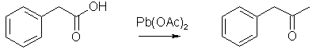
Place 1000g phenylacetic acid and 3000g anhydrous (or trihydrate) lead acetate in a distillation apparatus and heat. First an amount of water will
distill, and next phenyl-2-propanone in this destructive distillation, which requires liberal application of heat. The distillate will separate into two
layers. The organic layer is separated and redistilled to give pure phenyl-2-propanone, bp 105°C/10 mmHg or 216°C at atmospherical pressure.
A considerable improvement to this method has been made by Xtaldoc on a large scale.
The Lead(II)Acetate can be substituted with Calcium(II)Acetate, making the synthesis more environmentally friendly.
Methyllithium addition to Phenylacetic Acid27
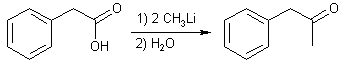
In a 100ml rb flask equipped with a side tube for a gas inlet capillary, a reflux condenser protected by a sodium hydroxide drying tube and magnetic stirring was placed
0.026 mole (3.5 g) of phenylacetic acid dissolved in 50 ml of ether, and the air was then expelled with a rapid stream of dry nitrogen. After 2-3 minutes the gas stream was slowed
down, just to create sufficient bubbles for stirring the solution during the experiment.
When all air had been expelled 0.055 mole of an ethereal solution of methyllithium was added through the condenser. A vivid reaction took place, the ether refluxed, and
a white precipitate was formed (lithium salt of the acid). After the addition of all the methyllithium the precipitate partly dissolved and a weakly opalescent solution was
obtained. If necessary, the solution was then refluxed for 10-30 minutes to complete the reaction. After the solution had reached room temperature, water was slowly added.
The excess of methyllithium was thus destroyed and lithium hydroxide was formed from the intermediate dilithium salt.
The alkaline water layer, which contained the lithium salt of unreacted acid, was removed in a separatory funnel, and the ethereal layer washed three times with half its
volume of water. The ether solution was then dried over magnesium sulphate, filtered and the ether driven off, first at ordinary pressure and then at aspirator vacuum to
give 2.65g (76%) of phenylacetone, usually pure enough for most purposes.
Phenyl-2-propanone by nitroalkylation of benzene
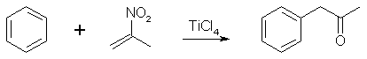
Titanium Tetrachloride Method7
To a stirred solution of 2-nitropropene (0.1 mol, 8.7g) in dry CH2Cl2 (300ml) was added benzene (0.5 mol, 39g) at room
temperature. Titanium tetrachloride (0.1 mol, 19g) was then added dropwise into the mixture with stirring at the same temperature. After being stirred for
60 min (or when the starting material completely disappears on TLC), water (150 ml) was added and the resultant heterogenous mixture was stirred at reflux
for 2h. The organic phase was separated, the aqueous phase extracted with CH2Cl2, and the pooled organic extracts washed with 1 M Na2CO3 solution and dried
over MgSO4. Evaporation of the solvent followed by vacuum distillation (bp 100-101°C at 14mmHg) afforded Phenyl-2-propanone (ca 9g, 70% of theory).
Triflic Acid Method14
A solution of 2-nitropropene (300 mg) in benzene (30 equivalents) was added to a well-stirred solution of CF3SO3H (10
equivalents with respect to 2-nitropropene) and benzene with the co-solvent of methylene chloride cooled to -40°C in a dry ice-acetone bath. The reaction
mixture was immediately (after 1 minute) poured into large excess dry methanol (100 mL) cooled to -78°C with vigorous stirring. After being warmed to
ambient temperature (10-15 min), the yellow solution was diluted with water (150 mL), neutralized with powdered NaHCO3 and saturated with NaCl. The solution
was extracted with CH2Cl2, dried over Na2SO4, and concentrated, and the residue was flash chromatographed (on SiO2, eluting with CH2Cl2:n-hexane 12:7) to give pure phenyl-2-propanone, 392 mg (85%), as a colorless oil. The 2,4 dinitrophenylhydrazone derivative, recrystallized from methanol, had mp 152.5-153.5°C.
Phenyl-2-Propanone from Phenyl-2-Nitropropene8
Sodium Borohydride/Nef Reaction
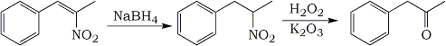
In this preparation, phenyl-2-nitropropene is reduced to phenyl-2-nitropropane with NaBH4 in methanol, followed by hydrolysis of the nitro group with
hydrogen peroxide and potassium carbonate, a variety of the Nef reaction. The preparation is a one-pot synthesis, without isolation of the intermediate.
This synthesis is not suitable for ring-substituted phenyl-2-nitropropenes, as the side chain tends to be oxidized when electron-donating substituents
are present on the ring.
16.3g (0.1 mole) phenyl-2-nitropropene was dissolved in 200ml methanol in a 250ml Erlenmeyer flask situated on a magnetic stirrer, and chilled to 0°C
with an ice/salt bath. Then, with good stirring, 7.6g (0.2 mole) of NaBH4 was added a little at the time, and the temperature was not allowed to to rise
above 15°C. When the generation of heat had subsided, the ice/salt- bath was removed and the solution was stirred at room temperature for two hours. At
the end of this period, the flask was once again placed in an ice/salt bath and the solution was allowed to cool to 0°C again. 100 ml of 30% H2O2 was then
added, together with 30 grams of anhydrous potassium carbonate, and the solution was left to stir for 18-24 hours at room temp. During the addition of
H2O2/K2CO3 a white, sticky precipitate forms, which can be a bit too thick for a weak magnetic stirrer to handle, so the mass can be stirred with a glass
rod now and then during the first two hours, after which the precipitate will be much looser and no match for any mag-stirrer.
The next day, the solution is slowly acidified with 2M HCl with good stirring, care being taken for the evolution of heat and CO2. About 300 ml of acid
is needed. When the pH of the solution turned acid, the color became significantly more yellow, but the acidity was confirmed with pH paper. All of the
precipitate was also be gone at this point. The solution was extracted with 3x100ml CH2Cl2, and the pooled organic extracts washed with 100ml 2M NaOH and
200ml H2O. The organic phase was dried over MgSO4, filtered with suction, and the solvent removed under vacuum to give a clear yellow oil. After distillation
of said oil at aspirator vacuum, the yield was around 60-70% of phenyl-2-propanone (P2P) as a light yellow oil.
Reduction with Iron Powder13
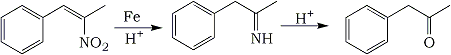
If phenyl-2-nitropropene is reduced by iron powder in an acidic medium (such as acetic acid or aqueous hydrochloric acid) the nitroalkene is reduced to
the oxime, which is then hydrolyzed by the acid into the desired phenyl-2-propanone.
Phenyl-2-nitropropene (10 g, 61 mmol) was dissolved in 75 ml HOAc and slowly dripped into a refluxing slurry of Fe powder (32 g, 0.57 mol) in 140 ml
HOAc. The mixture turned brownish and foamy, and the mixture was refluxed on low heat for 1.5 h. The reaction mixture was poured into 2000ml water, and was
extracted with 3x100 ml CH2Cl2. The combined extracts was washed with 2x150 ml H2O and dried over MgSO4. The solvent was distilled off, and the residue
distilled under vacuum to give phenyl-2-propanone in 75% yield.
Reduction with Chromous Chloride18
Another method for reducing phenyl-2-nitropropene to phenyl-2-propanone in 80% yield is to use Chromium(II)chloride as the
reducing agent.
Phenyl-2-Propanone from Chloroacetone9
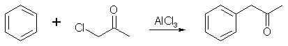
41 grams (0.31 mole) of anhydrous aluminum chloride and 100 ml of anhydrous benzene (free from thiophene) were put in
a 500ml three-necked flask which was equipped with a mercury-sealed stirrer, a reflux water condenser and a small addition funnel. The top of the condenser
was connected to a sulfuric acid trap and this trap was connected to a gas absorption bottle. The mixture was stirred and heated to refluxing on a
steam bath and 13.9 g (0.15 mole) of chloroacetone was allowed drop in slowly during a period of 30 minutes. After refluxing
for 5 hours, the solution was practically black. After cooling to room temperature, the reaction mixture was decomposed by slowly adding water through the
condenser, stirring during the addition. When no more hydrogen chloride was evolved, 20 ml of water and 20 ml of concentrated hydrochloric acid was added.
The benzene layer was separated and the aqueous layer extracted with four 25 ml portions of benzene. All of the benzene solutions were combined and filtered.
The benzene was distilled off, and the remaining viscous oil was distilled under reduced pressure. Nine grams of liquid boiling below 123°C/20-22mmHg was
obtained. Approximately 10g of high-boiling material was left in the distilling flask. Phenyl-2-Propanone was recovered from the distillate by making the
bisulfite addition product, filtering, decomposing the addition product with sodium carbonate solution, and steam distilled as long as any oil distilled
over. The distillate was extracted with ether, the ether dried over anhydrous MgSO4 and the ether distilled on a steam bath. The phenyl-2-Propanone was
distilled under reduced pressure, bp 108-114°C/20-22mmHg. Yield 6.5 g (32%).
Phenyl-2-propanone from Ephedrine Derivatives10
When ephedrine and related compounds are heated in strong aqueous acid, they are dehydrated to the enamine, which spontaneously can rearrange to the
isomeric imine (Schiff Base), which then can be hydrolyzed into phenyl-2-propanone and an amine salt. As all the steps are reversible processes, the
reaction equilibrium is driven towards the desired product by continuously removing the formed phenyl-2-propanone by the aid of steam distillation.
Ephedrine derivatives that can be used in this procedure include Ephedrine, Pseudoephedrine, Norephedrine and Norpseudoephedrine (Phenylpropanolamine).
Many other metal salts can be used instead of the zinc chloride, for details, see the translation of the original patents.
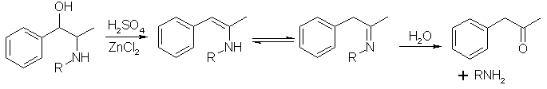
1025g 75% sulfuric acid was mixed with 1g ZnCl2, and 192g (1.16 mol) Ephedrine or Pseudoephedrine freebase was dissolved at a temperature of 50-100°C,
and the reaction mixture was heated further to 145-150°C. At 125°C steam is passed through the solution to facilitate mixing of the contents. At 145°C
the stream of steam is increased, and during 2.5-3 hours the phenylacetone is steam distilled from the reaction mixture. The the crude phenyl-2-propanone,
which is free from propiophenone, is isolated by toluene extraction of the distillate. After distillation through a short vigreaux column, 130g (82%) of
phenyl-2-propanone is isolated in a purity of 99.8%.
Electrosynthesis of P2P from Benzyl Chloride4
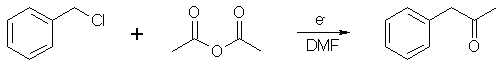
Synthesis of phenyl-2-propanone from benzyl chloride (79 mmol) and acetic anhydride (686 mmol) by electrolysis of the
reaction mixture. The anode is made of magnesium or aluminium, the cathode of nickel, the solvent is DMF (110g) and the supporting electrolyte is
tetrabutylammonium fluoroborate (2 g, 6 mmol). After the electrolysis using a current of 1A at a temperature of 0°C (2.2 faradays per mole of benzyl
chloride), the remaining benzyl chloride, the toluene which is a byproduct of the reduction of benzyl chloride, and phenyl-2-propanone, both in free form
and in the form of its enol acetate, are present in the solution. After the DMF has been evaporated off and the residue has been hydrolysed with hot dilute
HCl, phenyl-2-propanone is isolated by extraction with ether in 64% yield.
Another procedure33, using a lead cathode and a carbon anode, DMF as the solvent and a tetrabutylammonium tosylate electrolyte gives a 73% yield of phenyl-2-propanone after hydrolysis of the resulting enol ester.
Metallic Nickel-Mediated Synthesis of P2P from Benzyl Chloride and Acetyl Chloride28,29
Preparation of Metallic Nickel
A 50-mL two-neck flask was equipped with a magnetic stirrer, a rubber septum, and a condenser topped with argon inlet and outlet to oil pump. Lithium metal was cut under mineral oil. One piece of lithium with a shining metal surface was rinsed in hexane and transferred into a glass tube with a stopcock and a rubber septum which had been filled with argon. The glass tube was evacuated to evaporate the hexane, filled with argon, and weighed. Nickel halide (1.0 equiv, 9-13 mmol), lithium (2.3 equiv, 21-30 mmol), and naphthalene (0.1 equiv, 0.9-1.3 mmol) were placed in the flask through the side neck. The flask was evacuated and filled with argon two or three times. The use of a glovebox or -bag is not required if contact of the lithium with air is kept to a minimum. Then, glyme (25-30 mL) was added through the septum with a syringe, and the mixture was stirred for 12 h. During the reduction the surface of lithium became pink. After the lithium metal was consumed completely, the stirring was stopped; metallic nickel which had adhered to the walls of the flask was scraped off with the stirrer and a magnet. The nickel precipitated as a bulky black powder in a clear colorless solution after standing. The septum on the side neck was replaced with an addition funnel, and a mixture of appropriate reagents in glyme (10 mL) was then added to the nickel.
Reaction of Benzyl Chloride with Acetyl Chloride in the Presence of Metallic Nickel
Metallic nickel in glyme (25 mL), prepared from nickel iodide (2.97 mmol), lithium (0.152 g, 21.9 mmol), and naphthalene (0.122 g, 0.95 mmol), was heated to reflux. A mixture of benzyl chloride (1.0 g, 7.9 mmol) and acetyl chloride (0.65 g, 8.3 mmol) in glyme (10 mL) was added dropwise for 30 min. Additional heating was continued for 15 min, and the red-brown reaction mixture was cooled to room temperature, poured into a separatory funnel containing hydrochloric acid solution (37%, 100 mL), and extracted with chloroform twice. The chloroform solution was washed with water, and the aqueous phase was extracted with additional chloroform. The combined extracts were dried over anhydrous sodium sulfate and concentrated. The crude oil was purified by silica gel chromatography. It was eluted with hexane followed by chloroform to give phenyl-2-propanone (0.72 g, 68%), bp 95-96°C (11 mmHg); IR (neat) 1710 cm-1 (C=O).
Phenyl-2-Propanone by Rearrangement of 2-Phenylpropanal11
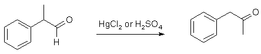
2-Phenylpropanal can be rearranged with either mercuric chloride (HgCl2) or sulfuric acid (H2SO4) to form the isomeric phenyl-2-Propanone (P2P).
2-Phenyl-propanal (hydratropic aldehyde) is an unwatched industrial chemical which is used in the perfume industry. 2-phenylpropanal can also be made from
alpha-methylstyrene.
The CAS number for 2-phenyl-propanal is [93-53-8], and synonyms for it include Hydratropic aldehyde; 2-Phenylpropionaldehyde; Cumenealdehyde;
alpha-methyl benzeneacetaldehyde and alpha-methyl phenylacetaldehyde. Boiling point 92-94°C/12mmHg, 222°C/760mmHg.
There are other ways of performing this rearrangement, 2-phenylpropanal is isomerized to phenyl-2-propanone in up to 87% yield by passing its vapor over
an iron zeolite catalyst bed at 500°C, followed by condensation of the vapors and redistilling the P2P12.
Even if the method below which uses mercuric chloride is higher yielding than the one using cold sulfuric acid, I would definitely reccommend the one
with sulfuric acid, as it is much cheaper to use, and is not disastrous for your health or the environment. 60g of mercuric chloride contains 45 grams of
mercury, enough to poison a medium-sized lake if released into the environment, and if you happen to ingest it yourself, it will accumulate in your body.
It is not possible to effectively separate 2-phenylpropanal (bp 222°C/760mmHg) from phenyl-2-propanone (bp 214°C/760mmHg) through simple distillation and
certainly not via vacuum distillation as the boiling points are too close. Fractional distillation could theoretically be used to separate them, but the
size of the column that would have to be used makes that option impractical. A good idea for separating a mixture of the two is to oxidize the mixture with
a mild oxidant which won't affect the P2P, but which will oxidize the aldehyde to 2-phenylpropionic acid. The acid can then be separated from the ketone by
dissolving the mixture in a non-polar solvent and washing the solution with dilute sodium hydroxide. The P2P stays in the organic layer, which is then dried
over MgSO4, the solvent removed under vacuum and the residue vacuum distilled to give pure P2P.
Method A
30g of 2-phenylpropanal is heated together with a mixture of 60g mercuric chloride (HgCl2, 1 eq.) and 450ml 75% ethanol in a pressure-safe sealed glass
container for 4.5h at 100°C in a boiling water bath, during which time a precipitate forms. Water is added, and the solution is steam-distilled (during
which operation the precipitate redissolves). The distillate is extracted with ether, dried, and the solvent is evaporated. The oily residue is then
vacuum distilled with a fractionating column to collect the phenyl-2-propanone in a yield of 80% or more, bp 92-101°C at 14mmHg.
When 0.1 equivalents of HgCl2 was used, only 10% phenyl-2-propanone was formed, the rest consisted of unchanged aldehyde.
Method B
9 g of 2-phenylpropanal is slowly added with good stirring during 35 minutes to 40ml concentrated sulfuric acid, while the temperature of the reaction
mixture is kept at -16°C. After all the 2-phenylpropanal has been added, the mixture is allowed to stand at the same temperature for another 15 minutes,
and then the mixture is poured onto crushed ice (100-150g is probably a suitable amount). When the ice has melted, the organics are extracted from the
water phase by 3x50ml diethyl ether, the pooled organic phases dried over MgSO4, the ether distilled off and finally the residue is vacuum distilled
(bp 91-96°C at 11 mmHg) to give 5.6g (62%) of phenyl-2-propanone.
Phenyl-2-Propanone from Acetone Enolate
If acetone is reacted with a strong base, which is able to deprotonate one of the relatively acidic alpha protons of the ketone, acetone enolate is
formed in quantitative yield. Such strong bases include sodium amide, lithium diisopropylamide and several alkoxides, for example potassium tert-butoxide.
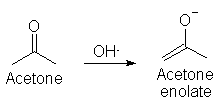
If this enolate of acetone is allowed to react with a halobenzene (preferably iodobenzene, but bromobenzene should also work) in DMSO under rigidly
anhydrous conditions, the two species will combine to form phenyl- 2-propanone.
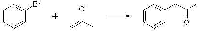
There has been no known actual attempts at this synthesis using the enolate of acetone and a halobenzene in DMSO (but it has been done in liquid ammonia),
but other ketone enolates, such as pinacolone has been extensively studied in this medium. There are no theoretical obstacles at all to why it would not work
in the production of phenyl-2-propanone. The yields in the reactions range between 50 and 98%. The reaction can be catalyzed by iron salts, oxygen or UV light.
For a more in-depth discussion of this synthesis, read Drone #342's Enolate Phenylacetone Synthesis FAQ 1.0
Free-Radical alkylation of Benzene with Acetone Catalyzed by Manganese(III)Acetate17
Phenyl-2-Propanone can be made in a single step by a free-radical reaction between benzene and acetone. The reaction relies upon the special oxidative
powers of manganese(III)acetate, a compound easily prepared from potassium permanganate. The yield is relatively low,
and requires high dilution of the reactants, but this can be improved, and the reaction is also applicable for other substituted benzenes, as can be seen
in the comprehensive Manganese(III)acetate catalyzed aromatic acetonylation document on this site.
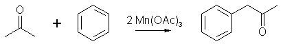
A mixture of Manganese(III)acetate dihydrate (13.4g, 50 mmol), benzene (150ml), acetone (150ml) and glacial acetic acid (250ml) was refluxed under an
inert atmosphere (argon, helium or nitrogen) until the dark brown color of manganese(III)acetate changed to the pale pink of manganese(II)acetate (about
90 min). The reaction mixture was partitioned between 400ml ether and 250ml water. The ether layer was separated and washed with 250ml water and with
2x250ml 5% Na2CO3 to remove any remaining acetic acid. The ether was then dried over anhydrous Na2SO4 (or MgSO4), the solvent evaporated and the residue
fractionately distilled to recover unreacted benzene, and to give phenyl-2-propanone in 40% yield (1.34g) based on the reacted manganese(III)acetate, which
is the limiting reagent in this reaction.
Phenyl-2-Propanone by Oxythallation of alpha-methylstyrene with Thallium(III)Nitrate23
Warning: Thallium salts are exceedingly toxic, and may be lethal upon ingestion! Handle with gloves only!
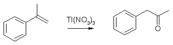
A solution of Thallium(III)Nitrate (39g, 100 mmol) in 100ml methanol is added to a solution of alpha-methylstyrene (11.82g, 100mmol) in
50ml methanol at room temperature with stirring, and there is an immediate precipitation of Thallium(I)Nitrate, and after standing for
15 minutes, the precipitate is filtered off, washed with a little methanol, and the filtrate is shaken for 5 min with 1M H2SO4 to hydrolyze
the formed Phenyl-2-Propanone dimethyl acetal. The solution is extracted with ether, dried over MgSO4 and the solvent distilled off, and
the residue vacuum distilled to give 10.9g Phenyl-2-Propanone (81% yield).
Thallium(III)Nitrate
50g Thallium(III)Oxide (Tl2O3) is dissolved in 150ml warm, concentrated nitric acid and cooling the pale yellow solution to 0°C.
The colorless crystals of Thallium(III)Nitrate trihydrate are filtered, washed with a little dilute nitric acid and dried in vacuo
over phsphorus pentoxide. Thallium(III)Nitrate (mol wt 390) is stable indefinitely if stored in tightly sealed bottles.
The salt is readily soluble in methanol and dilute mineral acids.
alpha-Methylstyrene can also be treated with Bromine and Sulfuric Acid to yield P2P.
Phenyl-2-Propanone from Benzaldehyde and a Phosphonium Ylide (Wittig reaction)15
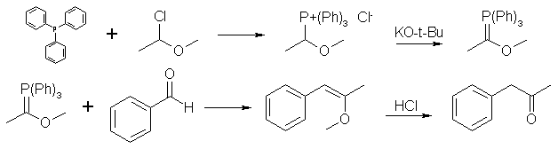
The phosphonium salt was prepared by dissolving triphenyl phosphine (76.4g, 0.29 mol) and alpha-chloroethyl methyl ether16 (28.4g, 0.30
mol) in 125 mL benzene. After standing for 40 h the mixture was filtered and washed with ether giving a white solid (112g, 88%) consisting of the crude
phosphonium salt containing one molar equivalient of benzene crystallization. This salt is slightly hygroscopic on exposure in air but can be stored
indefinitely in a sealed container. The ylid resulting from treatment of the phosphonium salt with base was found to be very unstable at room tempature,
the characteristic red color dissappearing within a few seconds. Accordingly, the preparation and reaction of this ylid was best carried out at -40°C.
The phosphonium salt (33 mmol) was suspended in 40 mL of glyme at -40°C under nitrogen. Potassium tert-butoxide (33 mmol) in 15 mL of glyme was
added with stirring over 5 minutes. At this point a solution of benzaldehyde (30 mmol) in 5 mL of glyme was added over five minutes. The mixture was
allowed to warm to room temp over 1h and was then directly distilled, to give pure phenyl-2-propanone enol methyl ether).
Phenyl-2-propanone was conveniently prepared from the enol ether by mixing with one equivalent of water with 0.5% HCl and enough methanol to effect
solution. The solution was heated to boiling and the solvent was then evaporated to give relatively pure phenyl-2-propanone in 88% overall yield.
Phenyl-2-Propanone by arylation of Potassium Acetylacetonate21
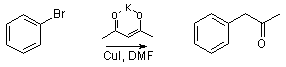
To a stirred solution of bromobenzene (31.4g, 200 mmol) in DMF (1 liter) was added cuprous iodide (32.4 g, 167 mmol) and potassium acetylacetonate
hemihydrate (125g, 834 mmol; Aldrich). The mixture was stirred and heated at 100°C for 24 hr, cooled, stirred with 2M sodium hydroxide (250 ml) for 1 hr and
extracted with toluene (2x500 ml). The combined extracts were washed with water, 1M hydrochloric acid and satd. aq. sodium bicarbonate, dried over magnesium
sulphate and concentrated in vacuo to leave a dark brown oil, which after purification gave phenyl-2-propanone in 65% yield.
Phenyl-2-Propanone by Heck Arylation22
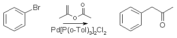
To a stirred solution of bromobenzene (60 mmol), isopropenyl acetate (9g, 90 mmol) and dichloro-bis-(tri-o-tolylphosphine)palladium (0.47g, 0.67 mmol) in
dry toluene (30 ml), under nitrogen, was added tributyltin methoxide (25.9 ml, 90 mmol; Aldrich). The mixture was stirred and heated at 100°C for 5 hr,
cooled and the solvent evaporated in vacuo. The residue was chromatographed on silica gel, to afford the phenyl-2-propanone in 67% yield.
Phenyl-2-Propanone from Benzyl cyanide and Trimethylaluminum25
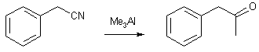
Trimethylaluminium (30ml of a 2M solution in toluene) was added to a solution of benzyl cyanide (2.34g, 20 mmol) in 20ml of toluene at -78°C and the mixture was under stirring allowed
to slowly warm up to room temperature and refluxed for 12h. After being cooled to 0°C, the solution was poured over crushed ice and made acidic with 6M HCl. Ethyl acetate was added and
the mixture was vigorously stirred for one hour. The organic layer was washed with aqueous NaHCO3, brine and dried over MgSO4. Removal of the solvent gave 2.75g of crude phenyl-2-propanone
as an oil, which can be purified by vacuum distillation or column chromatography.
Phenyl-2-Propanone from Phenylacetaldehyde and Dimethyl cadmium
Dimethyl Cadmium
2 MeMgI + CdCl2 => Me2Cd + 2 MgICl
To 500 ml. 3-neck rb. DRY FLASK attach a reflux condenser. Attach 125ml sep. funnel, add 31.3 ml. methyl iodide either
freshly prepared or dried overnight with calcium chloride. Add 60 ml. anhydrous diethyl ether to sep. funnel, replace stopper.
Add 12.5 grams Magnesium turnings to flask. Add 75 ml anhydrous ether to flask. Allow aprox. 10 ml. of halide ether solution to enter flask. If
cloudiness does not become apparent in 1 or 2 min stop. Do not add more! Take a glass rod about 12 inches in length and score with a 3 corner file
2 inches from one end using pliers and a rag to protect your hands break away the 2 inch piece. using the remaing 10 inch piece gently poke at the
magnesium turnings to expose fresh metal.
If reaction starts, add halide dropwise as quickly as the reflux column can handle. Be prepared to stop and cool with ice water bath if needed.
When all the halide has been added and the reaction is no longer refluxing, add 31.2 grams of anhydrous cadmium chloride in small portions through
side neck restoppering after each addition.
After all the Cadmium chloride has been added, the flask will have a tannish brown solid mass inside. This is the dimethyl cadmium, keep it
covered and protected from air. Proceed immediately to next part if at all possible.
Notes: Avoid breathing the cadmium chloride dust (it needs to be finely ground after drying) avoid contact with the methyl iodide or ether solution
of methyl iodide avoid breathing any vapours of the metal conversion reaction (it smells like garlic if you must know).
Phenyl-2-Propanone
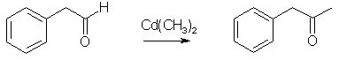
To a clean dry sep. funnel add 64 ml. freshly distilled phenylacetaldehyde (Note 1) and 50 ml. anhydrous ether. Add dropwise the aldehyde/ether
solution to the dimethyl cadmium swirling occasionally to break up the clumps. Be prepared to stop addition and cool if needed. When reflux has subsided do
not heat. Quickly pour into a 1000 ml. beaker containing 100 ml. distilled water 10 ml conc. HCl and 100 cc. of chipped ice. Neutralize with sat. sodium
bicarb untill fizzing stops. Separate, and extract water layer with 2x50 ml portions of technical grade ether. Distill under reduced pressure to strip
off excess ether. Test with bisulfite any product not forming addition is phenyl-2-propanol (very small amount) can be saved for later oxidation.
Hydrolyse addition product and distill if desired. bp. 100 at 13 mm. Yield 50-55 ml, ~85% of P2P.
Note 1: The phenylacetaldehyde will polymerise on standing. This polymer is degraded to the monomer on distillation. For this preparation it
also needs to be as dry as possible.
Phenyl-2-Propanone from Phenylacetyl Chloride and Dimethyl Cadmium32
A mixture of 40 ml. of anhydrous ether and 6.1 grams (0.25 mole) of magnesium was stirred under reflux while 35.5 grams (0.25 mole) of methyl iodide in 140 ml. of anhydrous ether was added over a 3-hour period; stirring under reflux was continued for an additional hour. The reaction mixture was cooled with an ice bath and 22.4 grams (0.134 mole) of powdered anhydrous cadmium chloride was added over a 5- to 10-minute period, warmed to room temperature, and refluxed on a steam cone for 1 hour. Ether was removed by distillation on a steam bath. To theresidue was added 100 ml. of anhydrous benzene and the distillation was continued until about 50 ml. more of distillate was collected. Again 100 ml of anhydrous benzene was added, the flask was cooled in an ice bath, and 30.9 grams (0.2 mole) of phenylacetyl chloride in 75 ml of anhydrous benzene was added with stirring over a period of approximately 10 minutes. The reaction mixture was warmed to room temperature and refluxed with stirring on a steam cone for 1 hour. The flask was again cooled in an ice bath and the reaction mixture decomposed by the addition of a solution of 25 grams of ammonium chloride in 200 ml of cold water. The organic phase was separated, washed, and dried over anhydrous sodium sulfate. The benzene was removed by flash distillation and the ketone distilled under reduced pressure. There was thus obtained 15.5 grams (58%) of 1-phenyl-2-propanone, bp 74-76°C/3 mmHg).
Phenyl-2-Propanone by Grignard Addition to Acetic Anhydride26
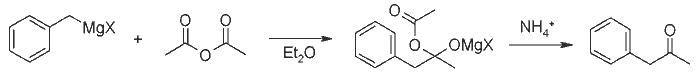
In a 500-mL three-necked flask, situated in a dry ice/acetone slush in a Dewar flask, there was added a solution of acetic anhydride (40g, 2.55 mol) in diethyl ether (100ml), and
the flask was equipped with a magnetic stirrer, a thermometer and an addition funnel (modified so that the added liquid was cooled externally by dry ice/acetone). To this was
added an etheral solution of benzylmagnesium chloride, prepared from benzyl chloride (25.5g, 0.2 mol) and magnesium shavings (4.9g, 0.2 mol). After the addition after one
hour was finished, the reaction mixture was allowed to stir at dry ice temperature for 2-3 hours, the cooling bath removed and the reaction quenched by the careful addition of
saturated aqueous ammonium chloride. The aqueous layer was separated, the organic phase washed with 10% sodium carbonate solution until the washes were no longer acidic
to universal pH paper, followed by 50 ml brine. The organic phase was dried over MgSO4, filtered, the ether evaporated on a water bath and the residue fractionately distilled to
yield phenyl-2-propanone (14g, 52%), bp 214-215°C/760mmHg (100-101°C/13mmHg).
Phenyl-2-Propanone by Grignard addition to Nitriles19,24
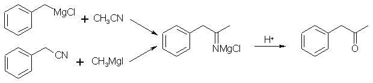
127g benzyl chloride was dissolved in 250mL Et2O, to this was added 27g Mg turnings in portions, an iodine crystal being
added after the first portion to initiate Grignard rxn. A thick white precipitate built up and clogged up some Mg, but after all was added, there was excess
unclogged Mg which would not react. [NOTE: This clogged-up material didn't react fully w/the MeCN, and so was decomposed to toluene, so try to avoid it!].Submersion of the flask in cold H2O was used as necessary during addition to prevent excessive boiling of the Et2O. After all Mg was added, and no further
reaction occurred, the rxn mixture was cooled in an ice-salt bath. A soln. of 62g acetonitrile in 100mL Et2O was added slowly while stirring w/a thermometer.
The reaction temperature rose to 30°C. After completion of addition, the mixture was refluxed gently, stirred thoroughly, then left to cool to room temp.
500mL 10% HCl was added slowly under stirring. [NOTE: This seemed to cause the Et2O layer to take on a reddish tint. I think the purity of final product
would be higher if reaction mixture was first poured onto ice, then acidified.] After all effervescence had stopped, the organic layer was separated. NaCl
was added to the aqueous layer, which was then extracted w/Et2O [NOTE: I think a lot of product was left behind in this aqueous layer; it was still very
orange even after adding NaCl and extracting with Et2O (which was a lighter shade of orange than the aq. layer!)]. The combined Et2O layers were washed with H2O,
dried over MgSO4. Et2O and a small amount of toluene were evaporated to give 42g crude phenyl-2-propanone as a clear orange oil. Vacuum distillation of this oil
afforded pure phenyl-2-propanone (bp 91-96°C at 11 mmHg).
The intermediate phenyl-2-propanone imine magnesium salt can also be prepared from methylmagnesium iodide and benzyl cyanide.
Both are hydrolyzed to phenyl-2-propanone with dilute hydrochloric acid. The imine salt can also be reduced directly to amphetamine
by sodium borohydride in methanol in high yield.
Simplification of the above procedure, by Poodle:
In a dream, 0.2 mol benzylmagesiumchloride grignard reagent were prepared by standard methods in diethylether (Total reaction volume: 200ml). Reaction
initiated by heating the mixture to 60°C for a short periode of time. About 2 moles of acetonitrile (100ml) was mixed with 100 ml of anhydrous diethylether and
cooled in ice/water. The benzylmagnesium chloride solution was added the acetonitrile over a periode of 10 minutes, using constant swirling of the reaction
mixture. A white percipitate was formed, corresponding to a intermediate complex, not soluble in ether or acetonitrile. This complex was isolated by filtration
through a buchner, and washed twice with water-free ether to remove any unwanted remains of acetonitrile or benzyl chloride. The white complex was briefly dried,
but as it began to turn yellow, no chances was taken and 15 ml distilled water was added, then another 10 ml (The complex reacted immediatly with the water,
giving heat and causing remaining ether to boil, the solution turned yellow/orange with oily orange bubbles.) The solution was exposed for a vacuum to remove any
remaining ether in the solution. Upon using the vaccum, ether was removed and the solution separated into two layers with an orange oil on top and a water layer
containing salts and undissolved salts. The oily layer was separated and gave 21 ml of possible P2P, about 75-80% of the theoretical 26 ml. The ketone was frozen
at -20, responding to that temperature by forming a solid, as theoretically expected by a substance having a melting point at -16.
This method could be of interest for producing P2P from acetonitrile, as it greatly simplifies the procedure by eliminating any need for extensive extraction of the ketone.
Phenyl-2-Propanone from Benzylchloride (via dibenzyl cadmium)20,30,31
2 PhCH2MgCl + CdCl2 → (PhCH2)2Cd + 2 MgCl2
(PhCH2)2Cd + 2 CH3COCl → 2 PhCH2COCH3 + CdO
Benzylmagnesium chloride was prepared from a solution of 0.2 mol benzyl chloride in 100ml anhydrous ether and 0.2 mol magnesium turnings
(Org. Synth. Coll. Vol 1, p. 471). The clear dark solution was filtered under
nitrogen through a glass wool plug. The solution of the grignard reagent was diluted with ether so that the concentration was no greater than 0.2
mol per 300ml and then cooled in an ice-bath. Anhydrous cadmium chloride (0.16 mol) was added with vigorous stirring over 10-15 min. Stirring was
continued with cooling for 2h.
A solution of 0.1 mol acetyl chloride in 3 volumes anhydrous ether was added to the cold benzyl cadmium reagent over 5 min. It was necessary to use a 2:1
molar ratio of the cadmium reagent to acid chloride, if the ratio was less a considerable amount of acid was found in the product. The mixture was stirred in an
ice-bath for 8h, and hydrolyzed with 20% H2SO4. The ether layer was separated and the aqueous phase extracted twice with ether. The combined ether solutions were
washed with water and 10% sodium bicarbonate, and was allowed to stand without drying overight. The ether solution was then extracted with 4x25ml 10% sodium
bicarbonate, and the combined aqueous extracts were extracted twice with ether, and all the pooled ether extracts were washed with water and dried over sodium
sulfate. The ether was distilled off, and the residue vacuum distilled to give phenyl-2-propanone in 50-70% yield (calculated on the acid chloride), (bp 91-96°C
at 11 mmHg).
The thermal stability of dibenzyl cadmium is low, so keep it on ice during handling. Using benzyl cadmium chloride or dibenzyl cadmium gave little difference in yield.
References
- Org. Syn. Coll. Vol. 2, p 487-489
- Org. Syn. Coll. Vol. 2, p 391-392
-
- Magidson and Garkusha, Zh. Obsh. Khimii, 11(4) 339 (1941); Chem. Abs. 5868 (1941)
- Chem. Ber. 68, 2112 (1935)
- Juraj Kizlink, Chemicke Listy 84(9), 993-4 (1990)
- US Pat 4,629,541
- [ Reference Lost ]
- A. I. Vogel, Practical Organic Chemistry, 5th Ed, p. 612-613.
- Tet. Lett. 29(24), 2977-2978 (1988)
- R. Ballini, Synthesis 723-726 (1994)
- J. Amer. Chem. Soc. 62, 1622 (1940)
- German Patents 3,026,698 and 3,200,232
- Danilov and Danilova, Chem. Ber. 60, 1050 (1927)
- US Patent 4,694,107
- Alexander Shulgin, Pihkal #109
-
- Okabe, K.; Ohwada, T.; Ohta, T.; Shudo, K. J. Org. Chem. 54, 733 (1989)
- Okabe, K.; Ohwada, T.; Ohta, T.; Shudo, K. Tetrahedron 46, 7539-7555 (1990)
- D. R. Coulsen, A new Synthesis of Methyl Ketones, Tet. Lett. 45, 3323-3326 (1964)
- Ann. Chem. 225, 269 (1884)
- J. Org. Chem. 49, 1603-1607 (1984)
- Tet. Lett. 26, 3777 (1985)
- Tet. Lett. 21, 155-158 (1980)
- J. Am. Chem. Soc. 82, 1975 (1960)
- Chem. Lett. 597-600 (1982)
- Bull. Soc. Chem. Jap. 57, 242 (1984)
- A. McKillop, Oxidative Rearrangement of Olefins with Thallium(III)nitrate, Tet. Lett. 60, 5275-5280 (1970),
A. H. Frye, Oxidation of Olefinic Compounds with Solutions of Thallium(III) Salts, US Pat 3,452,047
- J. Org. Chem. 37, 3369-3370 (1972)
- US Pat 5,639,780
- J. Am. Chem. Soc. 67, 154 (1945)
- Acta Chem. Scand. 6, 782-790 (1952)
- J. Org. Chem. 50, 1373-1381 (1985)
- Tet. Lett. 24, 2451-2452 (1983)
- J. Amer. Chem. Soc. 61, 741 (1939)
- H. Gilman., J. F. Nelson, Rec. Trav. Chim. 55, 518-530 (1936)
- E.H. Sund and H.R. Henze, Alkyl Benzyl Ketones and Hydantoin Derivatives, J. Chem. Engineering Data 15(1), 200-201 (1970)
- I. Nishiguchi, T. Oki, T. Hirashima and J. Shiokawa, Electroreductive Acylation of Benzyl Chlorides with Acid Anhydrides, Chemistry Letters 2005-2008 (1991)